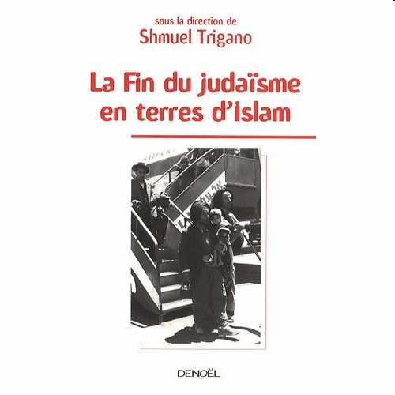

<!doctype html><html lang="fr"><head><meta charset="utf-8"><style>
body{max-width:860px;margin:40px auto;padding:0 20px;font:18px/1.6 Georgia,serif}
figure.image-figure{margin:1.6em auto;text-align:center}
.image-row{display:flex;justify-content:center;align-items:flex-start;gap:12px;margin:.55em auto;flex-wrap:nowrap}
.image-row img{display:block;height:auto;max-width:100%;object-fit:contain;flex:0 1 auto}
figcaption{display:block;font-style:italic;font-size:.92em;margin:.45em auto 0;max-width:90%;text-align:center}
p.footnote{font-size:.80em;line-height:1.45;margin:.45em 0}
</style></head><body><h1>La fin du judaïsme en terres d’Islam:</h1><blockquote style="margin:1em 8%;"><p>A partir de: La fin du judaïsme en terres d’Islam, Éditions Denoël, Paris 2009</p></blockquote>
<h2>une modélisation</h2>
<h2>Shmuel Trigano</h2>
<h2>Octobre 2009</h2>
<p>Copyright: Shmuel Trigano</p>
<h2><span style="color:#0000DE;">•</span> 600 000 personnes s’installèrent dans le nouvel État d’Israël, 300 000 en France et aux Amériques. <span style="color:#0000DE;"></span>Ils constituent aujourd’hui, la majorité de la communauté juive française</h2>
<h2><span style="color:#0000DE;">•</span> Entre 1920 et 1970, 900 000 Juifs se sont vus exclure des pays</h2>
<h2><span style="color:#0000DE;">•</span> Les années 1940 constituèrent un tournant dans ce drame.</h2>
<h2>900 000 Juifs condamnés à l’exode</h2>
<h2><span style="color:#0000DE;"></span>Du Maroc à l’Iran, de la Turquie au Yémen</h2>
<h2><span style="color:#0000DE;"></span>Où ils étaient installés depuis 20 siècles.</h2>
<h2>et de la population israélienne.</h2>
<h2>arabo-musulmans</h2>
<h2><span style="color:#0000DE;">•</span> C’est le point aveugle de la conscience politique contemporaine:</h2>
<h2><span style="color:#0000DE;">•</span> « L’Exode oublié », « Forgotten exile », est l’expression la plus</h2>
<h2><span style="color:#0000DE;"></span>Exode, certes, mais ce terme désigne l’acte, pas ses causes, que</h2>
<h2><span style="color:#0000DE;">•</span> Il n’y a même pas d’expression pour désigner cet événement</h2>
<h2>usitée, celle qui, en fait, censure la nature et la portée du fait</h2>
<h2>l’adjectif « oublié » vient occulter encore plus.</h2>
<h2>Comment expliquer un tel exode?</h2>
<h2><span style="color:#0000DE;"></span>« Oublié », par qui? Sinon les idéologues…</h2>
<h2>l’objet d’un déni.</h2>
<h2>considérable.</h2>
<h2>historique.</h2>
<h2><span style="color:#0000DE;">•</span> …Pourtant, si l’on compare les faits et les pays, un même modèle</h2>
<h2><span style="color:#0000DE;"></span>Tous les pays qui excluent les Juifs partagent un point commun: leur</h2>
<h2>appartenance à l’islam (y compris la Turquie et l’Iran qui ne sont pas</h2>
<h2><span style="color:#0000DE;">•</span> Les Juifs sont systématiquement exclus suite à la mise en place</h2>
<h2><span style="color:#0000DE;">•</span> Il est cependant difficile à envisager dans son ensemble</h2>
<h2><span style="color:#0000DE;"></span>Il se déploie dans un espace géographique immense</h2>
<h2><span style="color:#0000DE;"></span>Il se déroule essentiellement sur 30 ans (1940-1970)</h2>
<h2>Un modèle d’exclusion transnational</h2>
<h2><span style="color:#0000DE;"></span>Les communautés juives sont exclues en bloc</h2>
<h2>d’un véritable « statut des Juifs » de facto.</h2>
<figure class="image-figure" style="margin:1.6em auto;text-align:center;"><div class="image-row" style="display:flex;justify-content:center;align-items:flex-start;gap:12px;margin:.55em auto;flex-wrap:nowrap;"></div></figure>
<h2><span style="color:#0000DE;">•</span> Le phénomène est massif</h2>
<h2>des pays arabes)</h2>
<h2>se dessine:</h2>
<h2><span style="color:#0000DE;">•</span> Un ensemble de dispositifs juridiques, économiques, politiques vise</h2>
<h2><span style="color:#0000DE;"></span>Isolement et séquestration des personnes</h2>
<h2><span style="color:#0000DE;"></span>Discrimination socio-économique</h2>
<h2>à isoler les Juifs dans la société:</h2>
<h2>Le « statut des Juifs »</h2>
<h2><span style="color:#0000DE;"></span>Evénement pogromique</h2>
<h2><span style="color:#0000DE;"></span>Discrimination juridique</h2>
<h2><span style="color:#0000DE;"></span>Spoliation économique</h2>
<h2><span style="color:#0000DE;"></span>Dénationalisation</h2>
<h2>Isolement Exclusion /</h2>
<h2>Expulsion</h2>
<h2>Dénationalisation</h2>
<figure class="image-figure" style="margin:1.6em auto;text-align:center;"><div class="image-row" style="display:flex;justify-content:center;align-items:flex-start;gap:12px;margin:.55em auto;flex-wrap:nowrap;"></div></figure>
<p><span style="color:#0000DE;"></span> 12 juin 1951, loi sur la nationalité (art 11, clause 27): <span style="color:#0000DE;">-</span> Les non-musulmans sont astreints à un statut personnel régi par leur tribunaux (rabbiniques), à l’instar</p>
<p><span style="color:#0000DE;"></span> Conférence de Montreux (1937): Indépendance de l’Egypte sous le Roi Farouk, aggravation</p>
<p><span style="color:#0000DE;">-</span> La nationalité est retirée à toute personne engagée dans des actions en faveur d’Etats ennemis ou</p>
<p><span style="color:#0000DE;"></span> Traité de Sèvres, 1918, art. 6-4: Première atteinte au droit des Juifs autochtones, notion</p>
<p><span style="color:#0000DE;">-</span> Les Juifs autochtones deviennent apatrides: 40 000 personnes deviennent des « étrangers ».</p>
<p><span style="color:#0000DE;"></span> Lois de la nationalité de 1927 et 1929 privilégiant le droit du sang et l’affiliation arabo-</p>
<p>n’ayant pas de relations avec l’Egypte (en 1956 elles sont définies comme « sionistes »)</p>
<blockquote style="margin:1em 8%;"><p><span style="color:#0000DE;"></span> Loi du 9 mai 1950: Privation de nationalité pour les Juifs qui quittent l’Irak</p></blockquote>
<blockquote style="margin:1em 8%;"><p><span style="color:#0000DE;">-</span> Les Juifs ne sont pas autorisés à voter et à occuper une fonction politique.</p></blockquote>
<p><span style="color:#0000DE;"></span> Lois de la nationalité (1950-1951-1953-1956):</p>
<p>des dhimmis de l’époque pré-moderne.</p>
<p>d’appartenance à la race. des lois de la nationalité. musulmane</p>
<h3><span style="color:#0000DE;">•</span> Egypte</h3>
<h3><span style="color:#0000DE;">•</span> Libye</h3>
<h3><span style="color:#0000DE;">•</span> Irak</h3>
<h2>Atteinte à la liberté</h2>
<h2>d’entreprise et</h2>
<h2>d’association</h2>
<h2>Discrimination juridique</h2>
<h2>ou des communautés</h2>
<h2>associations juives</h2>
<h2>Tutelle des</h2>
<h2>Arabisation de</h2>
<h2>l’administration</h2>
<figure class="image-figure" style="margin:1.6em auto;text-align:center;"><div class="image-row" style="display:flex;justify-content:center;align-items:flex-start;gap:12px;margin:.55em auto;flex-wrap:nowrap;"></div></figure>
<p><span style="color:#0000DE;"></span> 1953: Les Juifs sont soumis à des restrictions et victimes de boycott <span style="color:#0000DE;"></span> 1954: Interdiction et nationalisation des clubs sportifs Maccabi <span style="color:#0000DE;"></span> 9 mai 1957: Décret obligeant les Juifs libyens ayant des parents en Israël à se déclarer au bureau libyen du boycott (or 90% des Juifs étaient déjà partis)</p>
<p><span style="color:#0000DE;"></span> 3 décembre 1958: Dissolution de la communauté juive tripolitaine, désormais administrée par un commissaire</p>
<p><span style="color:#0000DE;">-</span> Les Juifs ne peuvent pas voter, prétendre à des charges publiques, servir dans l’armée ou dans la police</p>
<p><span style="color:#0000DE;"></span> 1913: Imposition de la Sharia, aggravation de la condition du dhimmi <span style="color:#0000DE;"></span> 1922-1928: Décrets sur la conversion forcée des orphelins, exclusion des Juifs de la fonction publique et de l’armée</p>
<blockquote style="margin:1em 8%;"><p><span style="color:#0000DE;"></span> Années 1920: Interdiction de l’histoire juive et de la langue hébraïque dans les écoles juives</p></blockquote>
<p><span style="color:#0000DE;">-</span> Licenciement des Juifs dans l’administration, interdiction des associations de jeunesse juive</p>
<blockquote style="margin:1em 8%;"><p><span style="color:#0000DE;"></span> Années 1930: Exclusion des Juifs de la fonction publique et de l’enseignement</p></blockquote>
<p><span style="color:#0000DE;"></span> 1979: Interdiction des activités sionistes (distinguées des activités « juives ») <span style="color:#0000DE;"></span> 2000: Discrimination dans l’administration, l’université, les sociétés publiques</p>
<p><span style="color:#0000DE;">-</span> 2 avril 1960: Fermeture des écoles de l’Alliance Israélite Universelle</p>
<p><span style="color:#0000DE;">-</span> Fermeture d’associations juives « sionistes » (Club sportif Maccabi)</p>
<p><span style="color:#0000DE;"></span> 1960: <span style="color:#0000DE;">-</span> Interdiction d’acquérir de nouveaux biens pour les Juifs</p>
<p><span style="color:#0000DE;"></span> 1947: <span style="color:#0000DE;">-</span> Étudiants juifs expulsés de l’université de Beyrouth</p>
<p><span style="color:#0000DE;"></span> 1932: Censure des écoles juives (programmes)</p>
<h3><span style="color:#0000DE;">•</span> Yémen:</h3>
<h3><span style="color:#0000DE;">•</span> Iran:</h3>
<h3><span style="color:#0000DE;">•</span> Liban</h3>
<h3><span style="color:#0000DE;">•</span> Libye</h3>
<h3><span style="color:#0000DE;">•</span> Irak:</h3>
<blockquote style="margin:1em 8%;"><p><span style="color:#0000DE;"></span> Loi du 11 juillet 1958, spécifique au judaïsme: Remplacement des communautés juives par</p></blockquote>
<blockquote style="margin:1em 8%;"><p>des commissions provisoires du culte israélite et suppression du statut personnel des Juifs</p></blockquote>
<p><span style="color:#0000DE;"></span> 1929: Discrimination administrative <span style="color:#0000DE;"></span> 1945-1948: Exclusion des Juifs de la fonction publique <span style="color:#0000DE;"></span> 1947: Écoles juives sous surveillance pour égyptianiser et arabiser leurs programmes <span style="color:#0000DE;"></span> Mai 1948-1950: Ordre aux organisations communautaires de transmettre la liste de leurs</p>
<p><span style="color:#0000DE;"></span> 1956: Indépendance du Maroc, arabisation de l’administration <span style="color:#0000DE;"></span> 26 novembre 1958: Dahir (décret) de marocanisation des œuvres de bienfaisance juives</p>
<p><span style="color:#0000DE;"></span> 1947: Interdiction d’acquérir des biens immobiliers, licenciement des Juifs dans l’administration</p>
<blockquote style="margin:1em 8%;"><p><span style="color:#0000DE;"></span> Mai 1941: Création de bataillons de travaux forcés de conscrits non-musulmans</p></blockquote>
<p><span style="color:#0000DE;"></span> 1967: Nomination de directeurs musulmans dans les écoles juives</p>
<blockquote style="margin:1em 8%;"><p><span style="color:#0000DE;"></span> 1956: Indépendance de la Tunisie, tunisification de l’administration</p></blockquote>
<blockquote style="margin:1em 8%;"><p><span style="color:#0000DE;"></span> 1949: Expulsion des Juifs résidant dans les palais du roi Farouk</p></blockquote>
<h3><span style="color:#0000DE;">•</span> Turquie des Jeunes Turcs, de 1923 à 1945:</h3>
<p>adhérents à l’État</p>
<h3><span style="color:#0000DE;">•</span> Tunisie</h3>
<h3><span style="color:#0000DE;">•</span> Égypte</h3>
<h3><span style="color:#0000DE;">•</span> Maroc</h3>
<h3><span style="color:#0000DE;">•</span> Syrie</h3>
<h2>Isolement et séquestration des personnes</h2>
<h2>Refus de passeports Prise en otages de la</h2>
<h2>relations postales</h2>
<h2>Ligue Arabe Suspension des</h2>
<h2>détenteurs de</h2>
<h2>famille des</h2>
<h2>avec Israël</h2>
<h2>passeport</h2>
<h2>Boycott décrété par la</h2>
<figure class="image-figure" style="margin:1.6em auto;text-align:center;"><div class="image-row" style="display:flex;justify-content:center;align-items:flex-start;gap:12px;margin:.55em auto;flex-wrap:nowrap;"></div></figure>
<p><span style="color:#0000DE;"></span> 12 juin 1951, loi sur la nationalité: Les Juifs n’ont pas droit à des passeports ou au certificat de nationalité libyenne mais à des documents de voyage dont le renouvellement, à</p>
<p><span style="color:#0000DE;"></span> 1954: Liaisons postales avec Israël suspendues, restriction de l’émigration vers Israël, interdiction du tourisme à destination d’Israël</p>
<blockquote style="margin:1em 8%;"><p><span style="color:#0000DE;"></span> Juin 1948, loi martiale: Les Juifs sont interdits de quitter l’Égypte pour Israël</p></blockquote>
<p><span style="color:#0000DE;"></span> 1956: Difficultés à obtenir un passeport (la famille reste est prise en otage) <span style="color:#0000DE;"></span> 1958: Rupture des relations postales</p>
<p><span style="color:#0000DE;"></span> 1949: Interdiction formelle de sortir du pays (à l’œuvre depuis toujours)</p>
<blockquote style="margin:1em 8%;"><p><span style="color:#0000DE;"></span> 1973: Interdiction de toute communication avec l’extérieur</p></blockquote>
<p><span style="color:#0000DE;"></span> Années 1950: Retrait des passeports aux partants</p>
<p><span style="color:#0000DE;"></span> 1956: Relations postales avec Israël supprimées</p>
<p><span style="color:#0000DE;"></span> Juillet 1948: Interdiction de quitter le pays</p>
<p><span style="color:#0000DE;"></span> 1980: Difficulté à obtenir des passeports expiration, n’est pas automatique</p>
<h3><span style="color:#0000DE;">•</span> Tunisie:</h3>
<h3><span style="color:#0000DE;">•</span> Yémen:</h3>
<h3><span style="color:#0000DE;">•</span> Égypte</h3>
<h3><span style="color:#0000DE;">•</span> Maroc</h3>
<h3><span style="color:#0000DE;">•</span> Syrie</h3>
<h3><span style="color:#0000DE;">•</span> Irak:</h3>
<h3><span style="color:#0000DE;">•</span> Libye</h3>
<h3><span style="color:#0000DE;">•</span> Iran</h3>
<h2>nationalisation des</h2>
<h2>comptes bancaires</h2>
<h2>Rançonnement Séquestre sur les</h2>
<h2>liquidités et les</h2>
<h2>Séquestre et</h2>
<h2>biens</h2>
<h2>Spoliation économique</h2>
<h2>Vol au moment du</h2>
<h2>départ</h2>
<figure class="image-figure" style="margin:1.6em auto;text-align:center;"><div class="image-row" style="display:flex;justify-content:center;align-items:flex-start;gap:12px;margin:.55em auto;flex-wrap:nowrap;"></div></figure>
<blockquote style="margin:1em 8%;"><p><span style="color:#0000DE;">-</span> Loi confisquant les biens des Juifs (maisons, terres, magasins) à Alep, Qamishli, et installation des réfugiés</p></blockquote>
<p><span style="color:#0000DE;"></span> 1958-1961: Transferts des biens des partants à l’Etat et frais de départ considérables <span style="color:#0000DE;"></span> 1960, 1975: Rançon payée par une mécène juive du Canada pour quitter le pays <span style="color:#0000DE;"></span> 1967: Licenciements de travailleurs juifs au profit de Palestiniens, licenciement des médecins et pharmaciens juifs</p>
<p><span style="color:#0000DE;"></span> 1949: Établissement de la liste des biens et propriétés des Juifs, base de rançonnement ultérieur</p>
<p><span style="color:#0000DE;"></span> Année 1961: Rançon de 250 dollars par tête de Juif, payée par le Congrès Juif Mondial, pour</p>
<p><span style="color:#0000DE;"></span> 1961-1962: Les Juifs quittant le pays ne peuvent sortir qu’un dinar (2 euros)</p>
<p><span style="color:#0000DE;"></span> 1942: Imposition du capital appliquée sélectivement aux Juifs</p>
<p><span style="color:#0000DE;"></span> 1979: Confiscation des biens et propriétés des Juifs</p>
<p><span style="color:#0000DE;"></span> 1947: Licenciement des Juifs dans l’administration <span style="color:#0000DE;"></span> 1949: Biens financiers juifs saisis <span style="color:#0000DE;"></span> Avril 1950:</p>
<p>palestiniens dans les quartiers juifs <span style="color:#0000DE;">-</span> Caution pour quitter le pays</p>
<p>quitter le pays</p>
<h3><span style="color:#0000DE;">•</span> Turquie</h3>
<h3><span style="color:#0000DE;">•</span> Tunisie</h3>
<h3><span style="color:#0000DE;">•</span> Yémen</h3>
<h3><span style="color:#0000DE;">•</span> Maroc</h3>
<h3><span style="color:#0000DE;">•</span> Syrie</h3>
<h3><span style="color:#0000DE;">•</span> Iran</h3>
<p><span style="color:#0000DE;"></span> 1961, loi n°6: Séquestre des biens des Juifs se ren dant en Israël. Un conservateur général est chargé de les liquider.</p>
<p><span style="color:#0000DE;"></span> Février 1949: Mise sous séquestre des biens des Juifs autochtones et de ceux qui se trouvent</p>
<p><span style="color:#0000DE;"></span> 10 mars 1951: Gel des biens des Juifs ayant dû renoncer à leur citoyenneté pour partir <span style="color:#0000DE;"></span> Juillet 1948: Lourdes amendes sur les Juifs aisés</p>
<p><span style="color:#0000DE;"></span> 1970: Confiscation des biens juifs à l’étranger</p>
<h3><span style="color:#0000DE;">•</span> Égypte:</h3>
<h3><span style="color:#0000DE;">•</span> Libye:</h3>
<h3><span style="color:#0000DE;">•</span> Irak:</h3>
<h2>coopérative » des</h2>
<h2>entreprises</h2>
<h2>« Mise en</h2>
<h2>Discrimination socio-économique</h2>
<h2>l’activité économique</h2>
<h2>Discrimination dans</h2>
<figure class="image-figure" style="margin:1.6em auto;text-align:center;"><div class="image-row" style="display:flex;justify-content:center;align-items:flex-start;gap:12px;margin:.55em auto;flex-wrap:nowrap;"></div></figure>
<p><span style="color:#0000DE;"></span> 15 juillet 1961: Un certificat de nationalité est exigé pour tout acte commercial mais les Juifs ne peuvent l’obtenir</p>
<p><span style="color:#0000DE;"></span> 1948: L’imam Ahmad oblige les Juifs à transmettre aux Yéménites leur savoir faire dans les métiers de l’artisanat et du commerce avant de quitter le pays.</p>
<p><span style="color:#0000DE;"></span> 12 janvier 1950: Loi sur le contrôle des banques impliquant la ruine des agents de change, en majorité juifs</p>
<p><span style="color:#0000DE;"></span> 1947: Loi sur les compagnies, égyptianisation des affaires publiques et commerciales <span style="color:#0000DE;">-</span> 75% des employés doivent être de « vrais » égyptiens (arabes ou musulmans) = islamisation du personnel =&gt; une majorité de Juifs perdent leur travail</p>
<blockquote style="margin:1em 8%;"><p><span style="color:#0000DE;"></span> Année 1956: Mise en coopérative de l’économie (industrie et commerce) du pays. Les</p></blockquote>
<p><span style="color:#0000DE;"></span> Années 1960: Interdiction d’employer des Juifs dans les entreprises pétrolières</p>
<p><span style="color:#0000DE;"></span> 1960: Les entrepreneurs juifs sont obligés d’avoir un associé musulman</p>
<blockquote style="margin:1em 8%;"><p>entrepreneurs juifs sont obligés d’avoir un associé musulman</p></blockquote>
<p><span style="color:#0000DE;"></span> Février 1950: Interdiction de travailler dans l’agriculture</p>
<h3><span style="color:#0000DE;">•</span> Égypte:</h3>
<h3><span style="color:#0000DE;">•</span> Tunisie</h3>
<h3><span style="color:#0000DE;">•</span> Maroc:</h3>
<h3><span style="color:#0000DE;">•</span> Yémen</h3>
<h3><span style="color:#0000DE;">•</span> Libye</h3>
<h3><span style="color:#0000DE;">•</span> Syrie</h3>
<h3><span style="color:#0000DE;">•</span> Irak:</h3>
<h2>pouvoirs coloniaux et</h2>
<h2>de la police des États</h2>
<h2>Passivité des</h2>
<h2>arabes</h2>
<h2>Émeutes Arrestations</h2>
<h2>Destructions de</h2>
<h2>Événement pogromique</h2>
<h2>synagogues</h2>
<h2>Assassinat de</h2>
<h2>personnalités</h2>
<figure class="image-figure" style="margin:1.6em auto;text-align:center;"><div class="image-row" style="display:flex;justify-content:center;align-items:flex-start;gap:12px;margin:.55em auto;flex-wrap:nowrap;"></div></figure>
<p><span style="color:#0000DE;"></span> 1967: Émeutes (10 morts) <span style="color:#0000DE;"></span> 1969: Campagne contre les Juifs <span style="color:#0000DE;"></span> 1970: Cimetières juifs rasés <span style="color:#0000DE;"></span> 1978: Destruction de 64 synagogues et transformation de 78 synagogues en mosquées ou à Benghazi en église copte.</p>
<blockquote style="margin:1em 8%;"><p><span style="color:#0000DE;"></span> Janvier 1945: Émeutes anti juives, pillage des quartiers juifs de Tripoli (60% des biens juifs</p></blockquote>
<p><span style="color:#0000DE;"></span> 1949: Persécution contre les membres du mouvement sioniste <span style="color:#0000DE;"></span> Juin 1950: Persécution au Kurdistan. Les Juifs sont contraints de livrer leurs biens et leurs</p>
<p><span style="color:#0000DE;"></span> 1948: Émeutes <span style="color:#0000DE;"></span> Été 1963: Une personnalité juive de 84 ans, Halfalla Nahum, est assassinée à Tripoli, des</p>
<p><span style="color:#0000DE;"></span> 2-3 novembre 1945: Émeutes anti-britanniques et antisémites dans plusieurs villes <span style="color:#0000DE;"></span> 14-16 mai 1948: Arrestations massives (1000 juifs) internés pour accusation de sionisme <span style="color:#0000DE;"></span> 2 novembre 1948: Émeutes et pillages au Caire <span style="color:#0000DE;"></span> 26 janvier 1952: Samedi noir (émeutes et violences)</p>
<blockquote style="margin:1em 8%;"><p>détruits,135 morts). Les militaires complices. Évacuation forcée des Juifs. Détention</p></blockquote>
<p><span style="color:#0000DE;"></span> 1 et 2 juin 1941: Pogrom (Farhoud) de Bagdad (180 morts, 600 blessés) <span style="color:#0000DE;"></span> 1948: Vague de persécutions anti-juives officielles (arrestations, lourdes amendes) <span style="color:#0000DE;"></span> Septembre 1948: Exécution de Shafik Adass, un millionnaire juif</p>
<blockquote style="margin:1em 8%;"><p><span style="color:#0000DE;"></span> 14 juin 1950: Attentat contre une synagogue de Bagdad (3 morts, 20 blessés)</p></blockquote>
<p>provisoire des Juifs de la Hara à Tripoli et à Benghazi. personnalités juives sont agressées et blessées</p>
<p><span style="color:#0000DE;"></span> Juin-juillet 1934: Pogroms de Thrace maisons</p>
<h3><span style="color:#0000DE;">•</span> Turquie</h3>
<h3><span style="color:#0000DE;">•</span> Égypte</h3>
<h3><span style="color:#0000DE;">•</span> Libye</h3>
<h3><span style="color:#0000DE;">•</span> Irak</h3>
<p><span style="color:#0000DE;">-</span> Exécutions d’Avraham Brouhim, Albert Daniel et Manotsar Kedochim, notabilités de la communauté juive</p>
<p><span style="color:#0000DE;"></span> 1929-1930: Incidents dans plusieurs villes de la région de Constantine <span style="color:#0000DE;"></span> 3 août 1934: Violents incidents dans le Constantinois <span style="color:#0000DE;"></span> 5 août 1934: Pogrom au nom du djihad (27 morts) à Constantine (les soldats n’interviennent pas)</p>
<p><span style="color:#0000DE;"></span> Novembre 1947: Pogroms dans plusieurs villes, synagogues incendiées, arrestation de</p>
<p><span style="color:#0000DE;"></span> 2 septembre 1961: Meurtre d’un juif le jour de Rosh Hashana <span style="color:#0000DE;"></span> 5 juillet 1962: Assassinat et massacres à Oran et notamment dans les quartiers juifs</p>
<p><span style="color:#0000DE;"></span> 1968: Explosion d’antisémitisme <span style="color:#0000DE;"></span> 1979-1980: <span style="color:#0000DE;">-</span> Exécution du président de la communauté juive, Habib Elkanian, accusé de sionisme</p>
<p><span style="color:#0000DE;"></span> 5 août 1949: Attentat contre la synagogue de Damas (13 morts, 32 blessés)</p>
<blockquote style="margin:1em 8%;"><p><span style="color:#0000DE;">-</span> Assassinat du célèbre musicien Raymond Leyris à Constantine</p></blockquote>
<p><span style="color:#0000DE;"></span> 1959: Grenade à Bou Saada la veille de Kippour <span style="color:#0000DE;"></span> 12 décembre 1960: Saccage de la synagogue d’Alger <span style="color:#0000DE;"></span> 1961: <span style="color:#0000DE;">-</span> Cimetière juif d’Oran profané</p>
<p><span style="color:#0000DE;"></span> 1967: Enlèvements et assassinats de Juifs <span style="color:#0000DE;"></span> Septembre 1971: Assassinat du Dr Elia</p>
<p><span style="color:#0000DE;"></span> 1957: Assassinats à Oran et à Médéa <span style="color:#0000DE;"></span> Mars 1958: Grenades à Boghari plusieurs centaines de Juifs</p>
<p><span style="color:#0000DE;">•</span> Algérie:</p>
<p><span style="color:#0000DE;">•</span> Liban</p>
<p><span style="color:#0000DE;">•</span> Syrie</p>
<p><span style="color:#0000DE;">•</span> Iran</p>
<p><span style="color:#0000DE;"></span> 7 et 8 juin 1948: Émeutes anti-juives d’Oujda et Jerrada <span style="color:#0000DE;"></span> 3 août 1954: Émeute à Sidi Kassem-Petitjean (6 tués) <span style="color:#0000DE;"></span> Janvier 1961, à l’occasion de la visite de Nasser: Les dix jours noirs, exactions policières, 25</p>
<p><span style="color:#0000DE;"></span> 1912: Sac de Fes <span style="color:#0000DE;"></span> Mai 1938: Pogrom à Oujda (4 juifs assassinés), et à Jerada (39 tués, 30 blessés)</p>
<blockquote style="margin:1em 8%;"><p><span style="color:#0000DE;"></span> 1961-1962: Enlèvement et conversion forcée d’une douzaine de jeunes filles</p></blockquote>
<p><span style="color:#0000DE;"></span> 6 juin 1967: Pillage du quartier juif de Tunis et grande synagogue saccagée <span style="color:#0000DE;"></span> 1982: Assassinat de Juifs à Djerba <span style="color:#0000DE;"></span> 11 avril 2002: Attentat contre la synagogue de Djerba</p>
<p><span style="color:#0000DE;"></span> Janvier 1952: Émeutes contre la Hara de Tunis (1 mort) <span style="color:#0000DE;"></span> 1956: Agressions nocturnes <span style="color:#0000DE;"></span> 1957: Expropriation du vieux cimetière de Tunis <span style="color:#0000DE;"></span> 1960: Destruction de la grande synagogue de Tunis <span style="color:#0000DE;"></span> Juillet 1961: Violences après l’affaire de Bizerte</p>
<p><span style="color:#0000DE;"></span> 1931: Émeutes <span style="color:#0000DE;"></span> 1947: Émeutes et pillages: 80 morts <span style="color:#0000DE;"></span> 1948: Accusation de crime rituel élèves de Yeshiva arrêtés</p>
<h3><span style="color:#0000DE;">•</span> Tunisie:</h3>
<h3><span style="color:#0000DE;">•</span> Yémen</h3>
<h3><span style="color:#0000DE;">•</span> Maroc</h3>
<h2>Tunisie (après indépendance)</h2>
<h2>Iran (années 1950 et 1970)</h2>
<h2>Syrie-Liban (après 1947)</h2>
<h2>Deux modes de liquidation des communautés juives:</h2>
<h2>EXCLUSION</h2>
<h2>Turquie (1923-1945)</h2>
<h2>Maroc (1956-1961)</h2>
<h2>Yémen</h2>
<figure class="image-figure" style="margin:1.6em auto;text-align:center;"><div class="image-row" style="display:flex;justify-content:center;align-items:flex-start;gap:12px;margin:.55em auto;flex-wrap:nowrap;"></div></figure>
<h2>EXPULSION</h2>
<h2>Egypte</h2>
<h2>Algérie</h2>
<h2>Lybie</h2>
<h2>Irak</h2>
<h2><span style="color:#0000DE;">•</span> L’hostilité envers les Juifs, au XXème siècle, commence bien avant la</h2>
<h2><span style="color:#0000DE;"></span>Les Juifs en Palestine mandataire (pogroms de 1920, 1929, 1936, 1939)</h2>
<h2><span style="color:#0000DE;">•</span> Elle est la continuation de l’anti-judaïsme de l’islam qui assignait les</h2>
<h2>non-musulmans au statut inférieur de nation dominée: les dhimmis.</h2>
<h2>nationalisme arabe, les nations dominées (Arméniens et Juifs)</h2>
<h2><span style="color:#0000DE;">•</span> Avec la décomposition de l’empire ottoman, la naissance du</h2>
<h2><span style="color:#0000DE;"></span>Les Arméniens: massacre de 1894-1895 et génocide de 1908.</h2>
<h2><span style="color:#0000DE;"></span>Yémen, Syrie, Palestine mandataire, Turquie, Algérie.</h2>
<h2><span style="color:#0000DE;">•</span> Elles furent l’objet d’une répression violente</h2>
<h2>La faute au sionisme? <span style="color:#0000DE;">FAUX!</span></h2>
<h2>recherchèrent leur indépendance.</h2>
<h2>création de l’État d’Israël:</h2>
<h2><span style="color:#0000DE;"></span>Les Juifs furent accusés d’être co-responsables de la guerre décrétée par les</h2>
<h2><span style="color:#0000DE;">•</span> Le nationalisme arabe ajouta l’antisémitisme à l’antijudaïsme traditionnel</h2>
<h2><span style="color:#0000DE;"></span>Sans distinction d’appartenance idéologique (communistes, nationalistes,</h2>
<h2><span style="color:#0000DE;"></span>Ils furent chassés de toux les pays arabo-musulmans sur la base d’une</h2>
<h2>responsabilité collective, caractéristique de l’antisémitisme</h2>
<h2>États arabes contre Israël et de leur défaite consécutive</h2>
<h2>sionistes, religieux), ils furent l’objet de lois spéciales</h2>
<h2>La faute à l’antisémitisme</h2>
<p>CRIMINALISATION de la condition juive</p>
<h2>De l’anti-sionisme à l’antisémitisme</h2>
<h2>JUIF = SIONISTE</h2>
<h2>ANTISEMITISME <span style="color:#0000DE;">=</span></h2>
<p>de la condition juive</p>
<p>MASSIFICATION</p>
<h2><span style="color:#0000DE;"></span>Les Juifs du monde arabo-musulman n’étaient pas une puissance,</h2>
<h2>justifiait-elle la condamnation</h2>
<h2><span style="color:#0000DE;">•</span> En quoi ces Juifs méritaient-il d’être persécutés et exclus,</h2>
<h2><span style="color:#0000DE;">•</span> En quoi l’existence de l’État d’Israël</h2>
<h2>de tous les Juifs des nouveaux États-nations</h2>
<h2><span style="color:#0000DE;"></span>Ils n’étaient pas responsables du déclenchement des hostilités</h2>
<h2>si ce n’est du fait d’une idéologie et d’une politique</h2>
<h2>ni une armée. Ils ne prenaient pas part au conflit.</h2>
<h2>entre les Etats arabes et Israël.</h2>
<h2>d’une zone aussi immense?</h2>
<figure class="image-figure" style="margin:1.6em auto;text-align:center;"><div class="image-row" style="display:flex;justify-content:center;align-items:flex-start;gap:12px;margin:.55em auto;flex-wrap:nowrap;"></div></figure>
<h2>antisémites?</h2>
<h2><span style="color:#0000DE;">•</span> Le sort des réfugiés palestiniens, leur innocence, l’injustice dont ils</h2>
<h2>d’Israël, c’est-à-dire dans sa majorité de la même population qui a</h2>
<h2><span style="color:#0000DE;">•</span> L’occultation de cette histoire est la base de la délégitimation</h2>
<h2>On assiste à une véritable mystification</h2>
<h2>auraient été victimes en est l’argument principal</h2>
<figure class="image-figure" style="margin:1.6em auto;text-align:center;"><div class="image-row" style="display:flex;justify-content:center;align-items:flex-start;gap:12px;margin:.55em auto;flex-wrap:nowrap;"></div></figure>
<h2>souffert de cette oppression</h2>
<h2>Aujourd’hui…</h2>
<h2><span style="color:#0000DE;">•</span> Les Juifs sont devenus des citoyens des pays d’accueil et les Palestiniens</h2>
<h2><span style="color:#0000DE;">•</span> Aujourd’hui, 20% des citoyens israéliens sont palestiniens et les quelques</h2>
<h2><span style="color:#0000DE;">•</span> Les biens spoliés des Juifs ont une valeur 500 fois supérieure à ceux des</h2>
<h2><span style="color:#0000DE;">•</span> Il y a déjà un État palestinien sur le territoire de la Palestine mandataire</h2>
<h2><span style="color:#0000DE;">•</span> 900 000 Juifs expulsés ou exclus vs 600 000 réfugiés palestiniens en 1948</h2>
<h2><span style="color:#0000DE;"></span>La Jordanie dont 75% de la population est effectivement palestinienne.</h2>
<h2>milliers de Juifs qui subsistent dans les Etats arabes (Iran, Maroc,</h2>
<h2>Une falsification de l’histoire: quelques chiffres</h2>
<h2>Turquie) sont des minorités marginales au bord de l’extinction.</h2>
<h2>qui devait être partagé entre un Etat juif et un Etat arabe</h2>
<h2>sont toujours au ban des nations arabes.</h2>
<h2>Palestiniens.</h2>
<h2>La question palestinienne: conséquence du refus arabe</h2>
<h2><span style="color:#0000DE;">•</span> Les États arabes n’ont pas intégré les réfugiés palestiniens, à l’inverse</h2>
<h2><span style="color:#0000DE;">•</span> Les Arabes ont toujours refusé le partage de la Palestine mandataire</h2>
<h2><span style="color:#0000DE;">•</span> A l’heure actuelle, l’Autorité Palestinienne comme le Hamas refusent</h2>
<h2><span style="color:#0000DE;">•</span> Les Arabes de Palestine furent les alliés de 5 États arabes qui</h2>
<h2><span style="color:#0000DE;"></span>Alors qu’ils définissent la Palestine comme arabe et islamique.</h2>
<h2>d’Israël, pour en faire des foyers de guerre permanents.</h2>
<h2><span style="color:#0000DE;"></span>La création de la Transjordanie (1922) ne leur a pas suffi</h2>
<h2><span style="color:#0000DE;"></span>Jordanie, Irak, Syrie, Egypte, Liban et la Ligue Arabe</h2>
<h2><span style="color:#0000DE;"></span>En niant à Israël le droit au caractère national</h2>
<h2>attaquèrent l’État d’Israël à peine constitué.</h2>
<h2>toujours le partage</h2>
<h2>(1937, 1947).</h2>
<h2><span style="color:#0000DE;">•</span> Israël a accueilli les 600 000 Juifs expulsés des terres arabo-musulmanes</h2>
<h2><span style="color:#0000DE;">•</span> Le sionisme est l’aboutissement d’un processus d’autodétermination</h2>
<h2><span style="color:#0000DE;">•</span> Le peuple juif est un peuple de l’histoire et il a droit à la souveraineté</h2>
<h2><span style="color:#0000DE;">•</span> Les Juifs ont accepté tous les partages de la Palestine mandataire</h2>
<h2><span style="color:#0000DE;"></span>Sur une terre qui a connu 3 États juifs depuis la plus haute antiquité</h2>
<h2>Il n’y a pas de « péché originel » d’Israël</h2>
<h2><span style="color:#0000DE;"></span>Et qui s’émancipe au sein de ce monde, au Moyen Orient</h2>
<h2><span style="color:#0000DE;"></span>Il s’est en ce sens produit un échange de population</h2>
<h2><span style="color:#0000DE;"></span>D’une nation dominée du monde arabo-musulman</h2>
<h2><span style="color:#0000DE;"></span>Même les plus défavorables…</h2>
<h2><span style="color:#0000DE;">•</span> Ces quelques vérités constituent le B-A BA</h2>
<h2><span style="color:#0000DE;">•</span> Tels sont les éléments historiques et politiques</h2>
<h2>Il est temps de reprendre l’initiative</h2>
<h2>d’une vision saine de la situation,</h2>
<figure class="image-figure" style="margin:1.6em auto;text-align:center;"><div class="image-row" style="display:flex;justify-content:center;align-items:flex-start;gap:12px;margin:.55em auto;flex-wrap:nowrap;"></div></figure>
<h2>qui doivent inspirer le discours juif aujourd’hui.</h2>
<h2>et de rétablir la vérité des faits</h2>
<h2>fondée sur la réalité des faits.</h2>
<figure class="image-figure" style="margin:1.6em auto;text-align:center;"><div class="image-row" style="display:flex;justify-content:center;align-items:flex-start;gap:12px;margin:.55em auto;flex-wrap:nowrap;"></div></figure>
<figure class="image-figure" style="margin:1.6em auto;text-align:center;"><div class="image-row" style="display:flex;justify-content:center;align-items:flex-start;gap:12px;margin:.55em auto;flex-wrap:nowrap;"></div></figure>
<h2>La fin du judaïsme en terres d’islam</h2>
<p><span style="color:#009999;">http://www.denoel.fr/Denoel/Control.go?action=rech</span></p>
<h2><span style="color:#0000DE;">•</span> Sous la direction de Shmuel Trigano</h2>
<p>Ruth Tolédano-Attias, Bat Ye’or, David Littman Annexes en collaboration avec:</p>
<h2><span style="color:#0000DE;">•</span> Un ouvrage collectif de</h2>
<h2><span style="color:#0000DE;">•</span> Aux Editions Denoël</h2>
<p>Esther Meir-Glitzenstein,</p>
<p>Ruth Tolédano-Attias</p>
<p>Maurice Roumani,</p>
<p>Richard Ayoun,</p>
<p>Orly Rahimyian,</p>
<p>Jacques Taïeb,</p>
<p>Yigal Bin-Nun, Yaron Harel,</p>
<p>Rifat N. Bali,</p>
<h2><span style="color:#0000DE;">•</span> Prix: 25€</h2></body></html>